Un parcours pour chaque utilisateur : commercial, caissier, magasinier, comptable, ressources humaines, chef de projet et administrateur. Des procédures pas à pas, des captures d'écran et des exercices pour s'entraîner.
CommercialCaissierMagasinierComptableRH et paieChef de projetAdministrateurTous
IAM Technology Ouagadougou, Burkina Faso
IAM INVOICER 0.5.0 Octobre 2026
Sommaire
Prise en main (tous)
Quel parcours suivre ?
Commercial : clients, devis, factures
Imprimer, envoyer, encaisser
CRM et factures récurrentes
Caissier : le point de vente
Magasinier : articles, achats, stock
Comptable : écritures et états
Comptable : taxes et déclarations
RH : salariés, paie, congés
Chef de projet
Administrateur : société et documents
Administrateur : utilisateurs et droits
Administrateur : import, licence, sauvegardes
Travailler sans Internet
Bonnes pratiques et questions fréquentes
Comment utiliser ce manuel
Lisez d'abord le chapitre 1, puis votre parcours (chapitre 2). Les noms en gras encadré sont ceux des menus et des boutons, tels qu'ils apparaissent à l'écran. Chaque chapitre se termine par un exercice à faire sur une base d'essai.
Base d'essai
Pour vous former sans risque, demandez à votre administrateur une base d'entraînement (ou installez l'application sur un poste en mode « Ce poste uniquement »). Les numéros de factures d'une vraie base ne se suppriment pas.
1. Prise en main Pour tous les utilisateurs
Se connecter
Ouvrez IAM INVOICER : l'icône sur le bureau, l'application sur le téléphone ou l'adresse de votre société dans le navigateur (lien Se connecter du site).
Saisissez votre Nom d'utilisateur et votre Mot de passe, puis Se connecter.
Après 10 essais erronés, attendez 15 minutes ; en cas d'oubli, demandez à l'administrateur de redéfinir votre mot de passe.
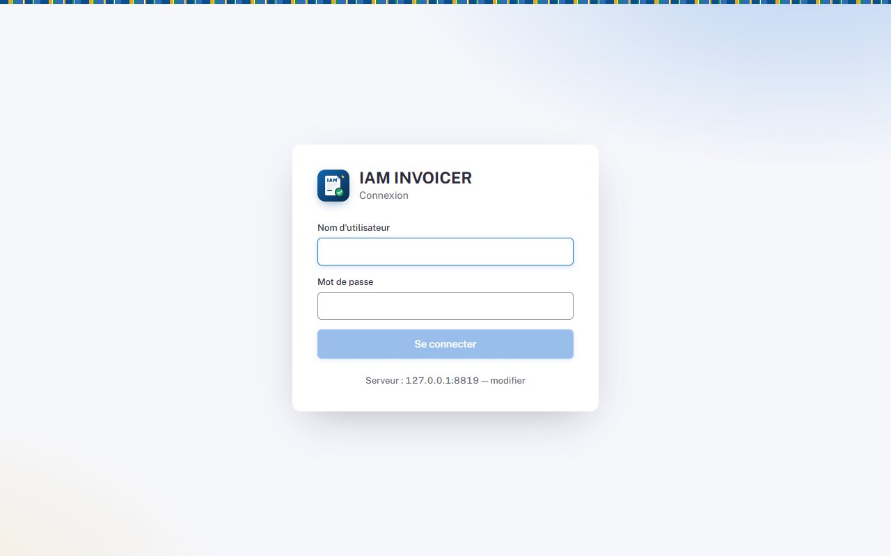
Écran de connexion
L'écran principal
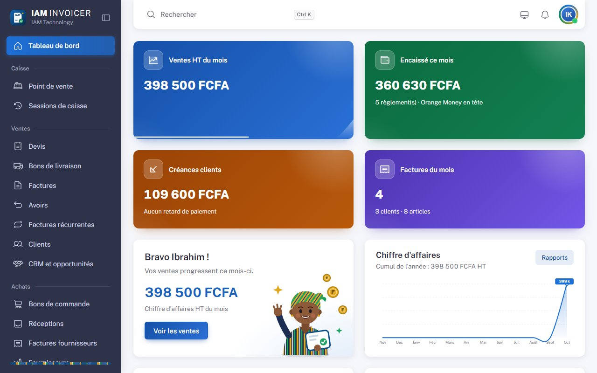
Tableau de bord : indicateurs du mois, chiffre d'affaires, encaissements, créances
À gauche, le menu, classé par domaine (Caisse, Ventes, Achats, Stock, Finance, Gestion, Comptabilité, Administration). Chaque domaine a sa couleur. Un cadenas signale un module non inclus dans votre licence.
En haut : la recherche, les notifications et votre compte. Le bouton ‹ › réduit le menu pour gagner de la place.
Les tuiles colorées en tête de chaque page résument la situation : montants, retards, alertes.
Sur téléphone, le menu est en bas de l'écran ; les listes s'affichent en cartes.
Trouver n'importe quoi en un instant
Appuyez sur Ctrl + K (ou cliquez sur Rechercher) et tapez quelques lettres : une page, un client, une action comme « nouvelle facture ». Validez avec Entrée.
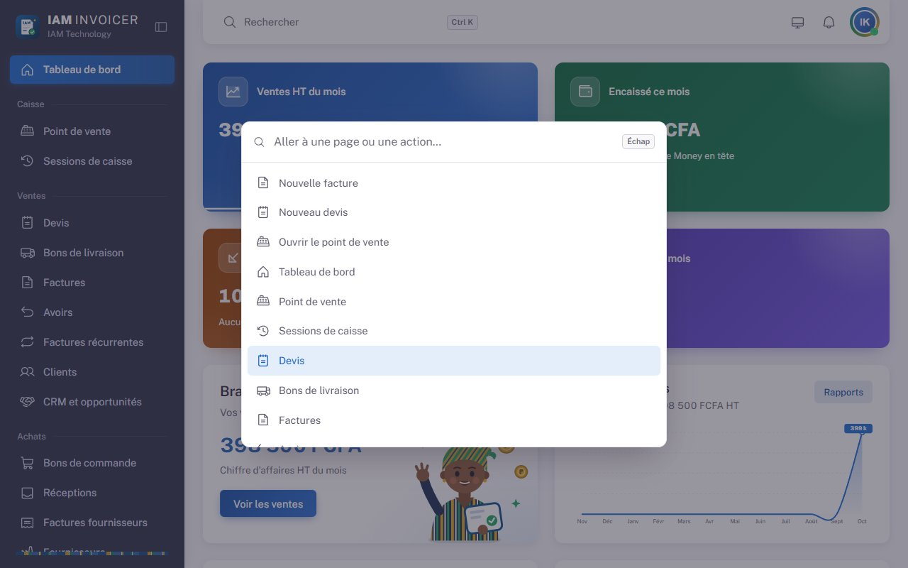
Recherche rapide
Mon compte
Menu de votre photo (en haut à droite) → Mon compte : changez votre mot de passe et ajoutez votre photo de profil (elle est recadrée automatiquement). Le même menu permet de choisir le thème clair, sombre ou automatique, et de se déconnecter.
Les listes et leurs actions
Chaque ligne d'une liste porte ses boutons d'action à droite (survolez-les pour lire leur nom) : aperçu, PDF, imprimer, dupliquer, modifier, désactiver, supprimer. Cliquer sur la ligne ouvre la fiche. Exporter (Excel) enregistre la liste affichée.
Exercice
Connectez-vous, ajoutez votre photo de profil.
Avec Ctrl+K, ouvrez la liste des clients sans utiliser le menu.
Passez en thème sombre puis revenez en automatique.
2. Quel parcours suivre ?
Chaque utilisateur a un rôle qui détermine les menus visibles. L'administrateur peut adapter ces droits (chapitre 13).
Votre rôle
Chapitres à suivre
Durée conseillée
Commercial
1, 3, 4, 5, 15, 16
2 heures
Caissier
1, 6, 15, 16
1 heure
Magasinier
1, 7, 16
1 h 30
Comptable
1, 3, 4, 8, 9, 10 (paie), 16
3 heures
Ressources humaines
1, 10, 16
1 h 30
Chef de projet
1, 11, 4, 16
1 h 30
Administrateur
tout le manuel, en particulier 12, 13 et 14
une journée
3. Commercial : clients, devis, factures
Créer un client
Ventes → Clients, puis Nouveau client.
Renseignez au moins Nom / raison sociale. Ajoutez téléphone, e-mail (pour l'envoi des factures), identifiant fiscal (IFU, NIF…) et délai de paiement.
Enregistrer. Le code client est attribué automatiquement.
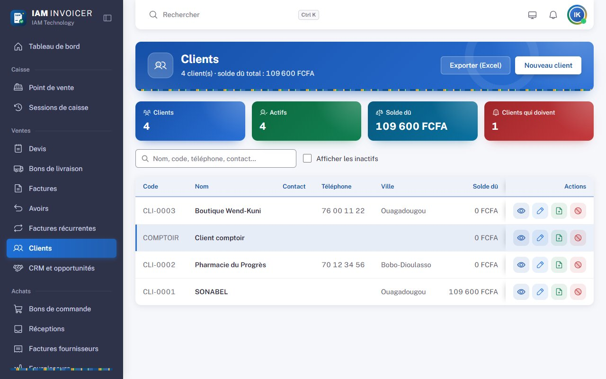
Liste des clients : soldes dus et actions
Un client qui ne travaille plus avec vous se désactive (bouton barré) : il disparaît des nouveaux documents mais son historique reste.
Du devis à la facture
Ventes → Devis → Nouveau devis. Choisissez le client, ajoutez les lignes : un article du catalogue (le prix et la TVA se remplissent) ou une ligne libre.
Enregistrer garde un brouillon modifiable. Valider attribue le numéro définitif.
Quand le client accepte : bouton → Bon de livraison ou → Facture. Les lignes sont reprises.
Vérifiez la facture puis Valider : le stock et la comptabilité sont mis à jour automatiquement.
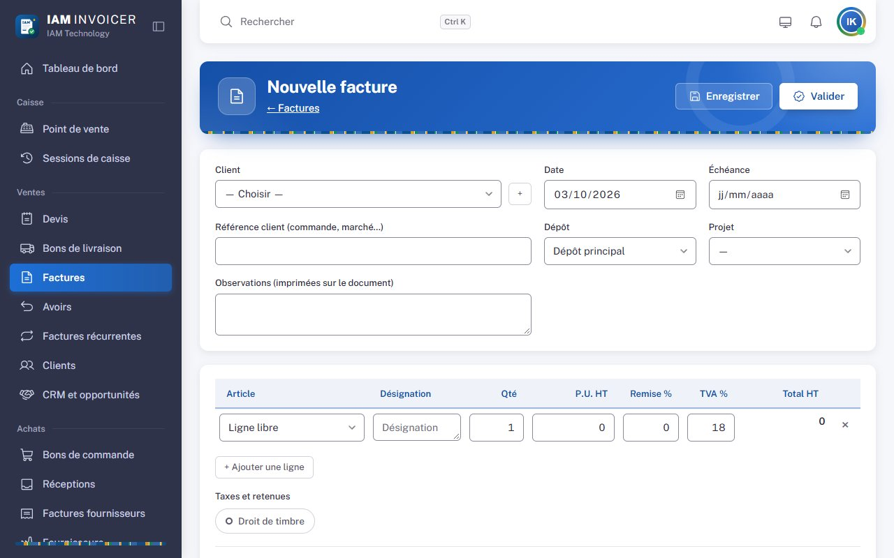
Saisie d'une facture : client, lignes, taxes et totaux
Règles à connaître
Une facture validée ne s'annule pas et ne se supprime pas : on établit un avoir (bouton → Avoir).
Seul un brouillon peut être supprimé.
Une vente au client « comptoir » doit être payée en totalité ; pour une vente à crédit, choisissez le vrai client.
Taxes et retenues sur une facture
Sous les lignes, la zone Taxes et retenues montre les taxes paramétrées par l'administrateur : cliquez pour les appliquer. Une retenue à la source (par exemple pour un ministère) est déduite du Net à payer et enregistrée automatiquement comme règlement à la validation.
Exercice
Créez le client « Pharmacie de l'Espoir ».
Faites-lui un devis de deux articles, validez-le, transformez-le en facture et validez.
Créez un avoir pour un article retourné.
4. Imprimer, envoyer, encaisser
Aperçu et impression
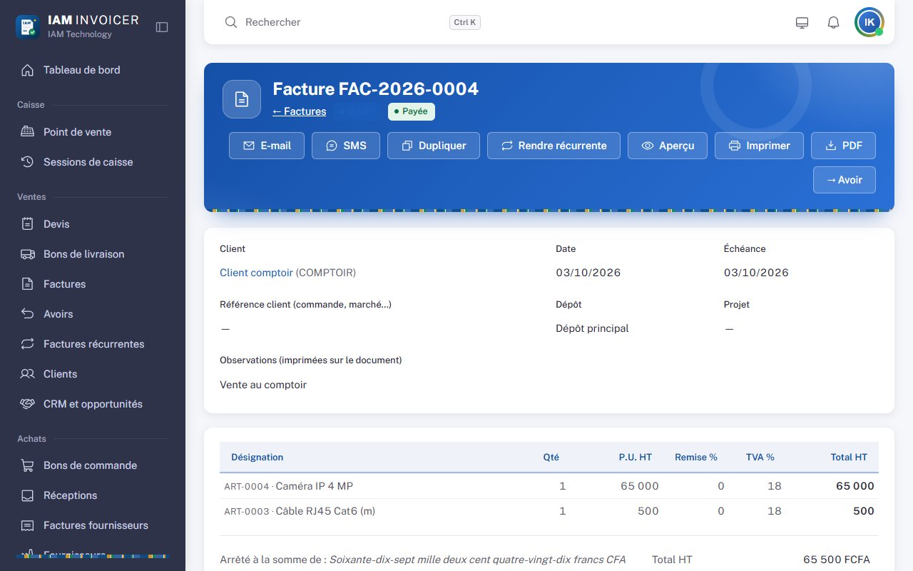
Facture validée : envoi, duplication, aperçu, impression, PDF
Aperçu (ou Imprimer) ouvre l'aperçu avant impression : toutes les pages telles qu'elles sortiront, avec les numéros « Page 1 / 2 ». Choisissez A4 ou Ticket, puis Imprimer ou Enregistrer PDF.
Sur une longue facture, l'en-tête du tableau se répète sur chaque page ; les totaux et les signatures ne sont jamais coupés.
Envoyer par e-mail ou SMS
Boutons E-mail et SMS de la facture : le message est prérempli à partir d'un modèle, le PDF est joint. L'historique des envois est dans Communications → E-mails et SMS.
Enregistrer un règlement
Sur la facture validée, bouton Encaisser (ou Finance → Paiements).
Montant, date et mode : espèces, Orange Money, Moov Money, Wave, virement, chèque, carte.
Le badge passe à Partielle puis Payée. La liste des factures montre le reste à régler et les retards.
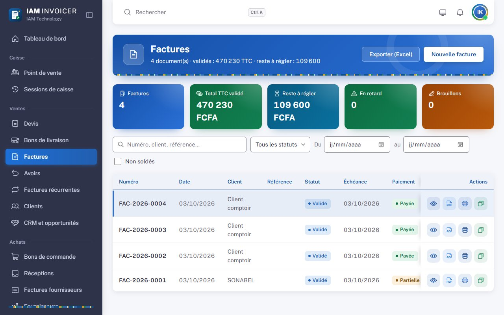
Liste des factures : indicateurs (total, reste à régler, retards, brouillons)
Relancer les retards
Dans E-mails et SMS, Relancer une facture ou toutes les factures en retard en une fois.
Exercice
Ouvrez l'aperçu de votre facture, enregistrez le PDF, puis encaissez la moitié en Orange Money et le reste en espèces.
5. CRM et factures récurrentes
Suivre ses opportunités
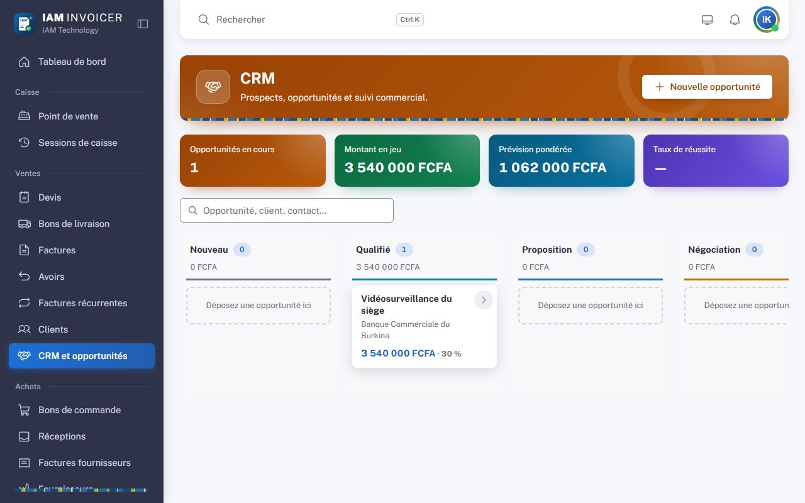
Pipeline commercial : glissez une carte pour la faire avancer
Ventes → CRM et opportunités → Nouvelle opportunité : intitulé, prospect ou client, montant estimé, probabilité.
Faites glisser la carte d'une colonne à l'autre (Nouveau, Qualifié, Proposition, Négociation, Gagné, Perdu) ou utilisez sa flèche.
Notez appels et rendez-vous dans les activités ; l'agenda les rappelle.
Gagnée : convertissez le prospect en client et créez le devis en un clic.
Factures récurrentes
Pour un contrat de maintenance, un abonnement ou un loyer : Ventes → Factures récurrentes → Nouveau contrat, ou bouton Rendre récurrente sur une facture validée.
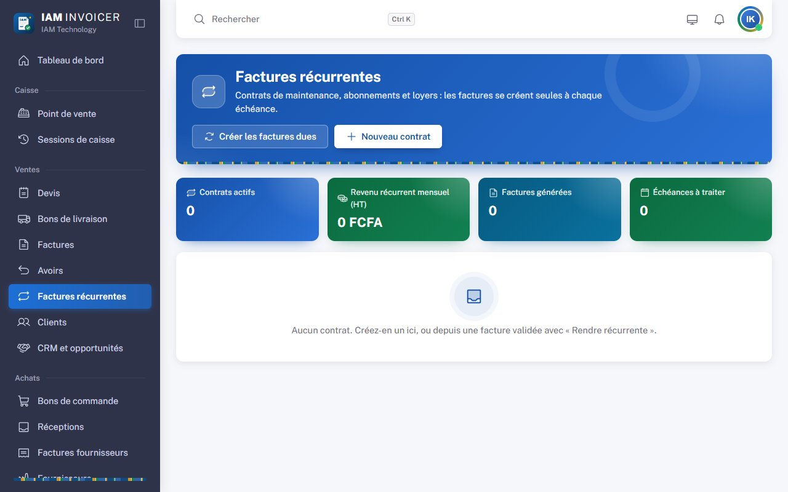
Contrats récurrents : revenu mensuel, échéances à traiter
Fréquence : mensuelle, trimestrielle, semestrielle, annuelle ; date de la prochaine facture ; date de fin éventuelle.
Brouillon à vérifier (conseillé au début) ou Validée d'office.
Les factures arrivées à échéance sont créées automatiquement à la connexion, rattrapage compris après une absence.
6. Caissier : le point de vente
Ouvrir la caisse
Caisse → Point de vente.
Comptez le fonds de caisse et saisissez-le, puis Ouvrir la caisse.
Vendre
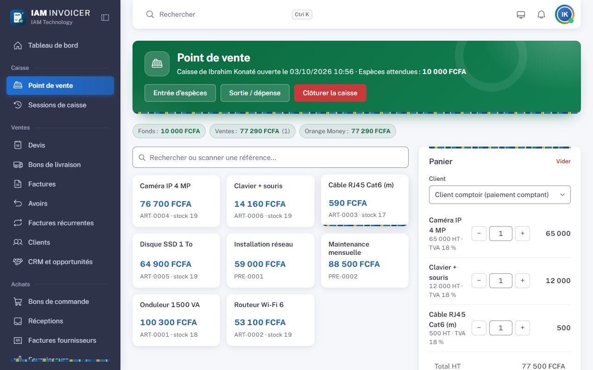
Point de vente : articles à gauche, panier et total à droite
Touchez les articles, ou scannez leur code-barres (le curseur doit être dans la zone de recherche).
Ajustez les quantités avec + et −. Pour une vente à crédit, choisissez le client (sinon « client comptoir »).
Encaisser : choisissez le ou les modes (espèces, mobile money…). Pour les espèces, saisissez la somme reçue : la monnaie à rendre s'affiche.
Imprimez le ticket si le client le souhaite.
Entrées et sorties d'espèces
Entrée d'espèces (apport) et Sortie / dépense (taxi, petit achat) : indiquez toujours le motif.
Clôturer
Clôturer la caisse en fin de journée.
Comptez les espèces et saisissez le montant : l'écart s'affiche. Un écart doit être expliqué.
Une caisse clôturée ne se modifie plus. L'historique est dans Sessions de caisse.
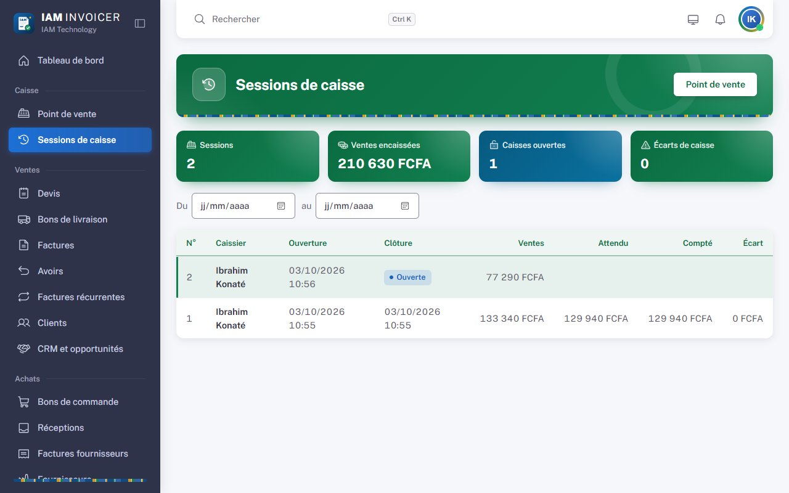
Sessions de caisse : ventes, caisses ouvertes, écarts
Sans Internet
La caisse continue de fonctionner : les ventes sont gardées sur l'appareil et envoyées au retour du réseau (chapitre 15). Le numéro définitif de la facture est attribué à ce moment-là.
Exercice
Ouvrez la caisse avec 10 000 FCFA, faites deux ventes (l'une en espèces avec rendu de monnaie, l'autre en paiement mixte espèces + Wave), une sortie de 2 000 FCFA, puis clôturez sans écart.
7. Magasinier : articles, achats, stock
Articles et prestations
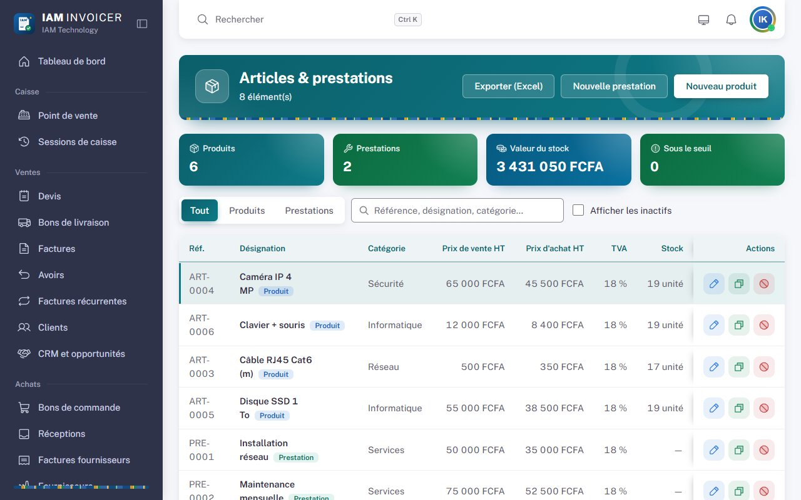
Catalogue : prix, TVA, stock, articles sous le seuil
Nouveau produit ou Nouvelle prestation : désignation, catégorie, unité, prix de vente et d'achat HT, TVA, stock minimum (alerte). Choisissez le suivi par lot ou numéro de série avant les premiers mouvements.
Achats
Achats → Bons de commande → Nouveau, puis Valider.
À la livraison : → Bon de réception, ajustez les quantités reçues, validez : le stock augmente au coût d'achat.
À réception de la facture : → Facture fournisseur, puis règlement dans Paiements.
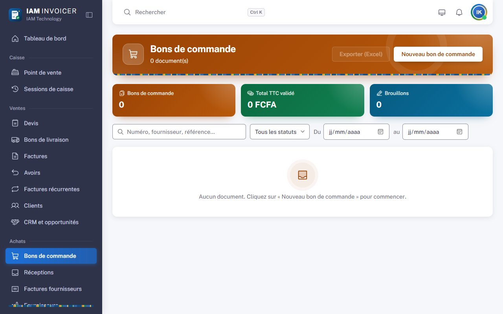
Bons de commande
Stock, dépôts et inventaire
État du stock : quantités, valeur au coût moyen, articles sous le seuil.
Dépôts, transferts, lots : stock par magasin, transferts entre dépôts, traçabilité des lots et numéros de série.
Inventaire : saisissez les quantités comptées ; seuls les écarts sont enregistrés.
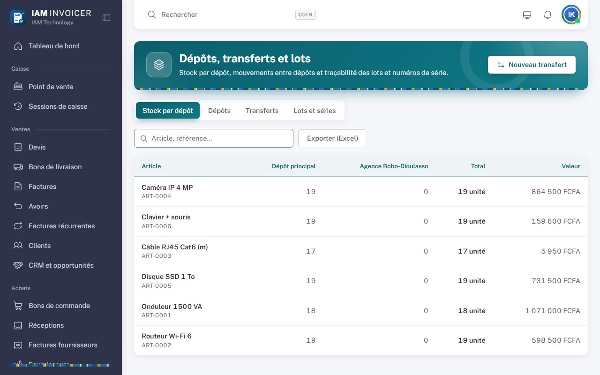
Stock par dépôt et transferts
Exercice
Commandez 10 câbles à un fournisseur, réceptionnez-en 8, transférez-en 3 vers le dépôt de Bobo-Dioulasso, puis faites un inventaire qui constate 1 câble manquant.
8. Comptable : écritures et états
Ce qui est automatique
Factures, avoirs, factures fournisseurs, règlements, caisse, retenues, paie, dépenses de projet et immobilisations passent leurs écritures SYSCOHADA à la validation. Vous n'avez à saisir que les opérations diverses (à-nouveaux, régularisations, inventaire).
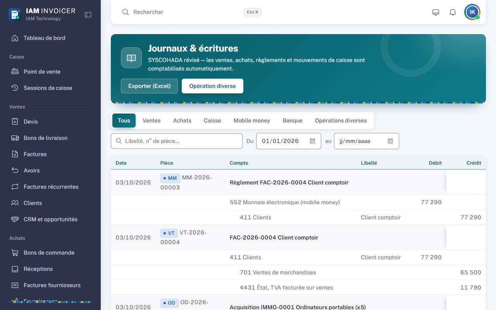
Journaux et écritures
Consulter
Grand livre : le détail d'un compte (par exemple 411 pour un client).
Balance : tous les comptes, mouvements et soldes, exportable.
Compte de résultat : produits, charges et résultat (classes 6, 7 et 8).
Bilan : actif et passif à une date, avec contrôle d'équilibre ; imprimable.
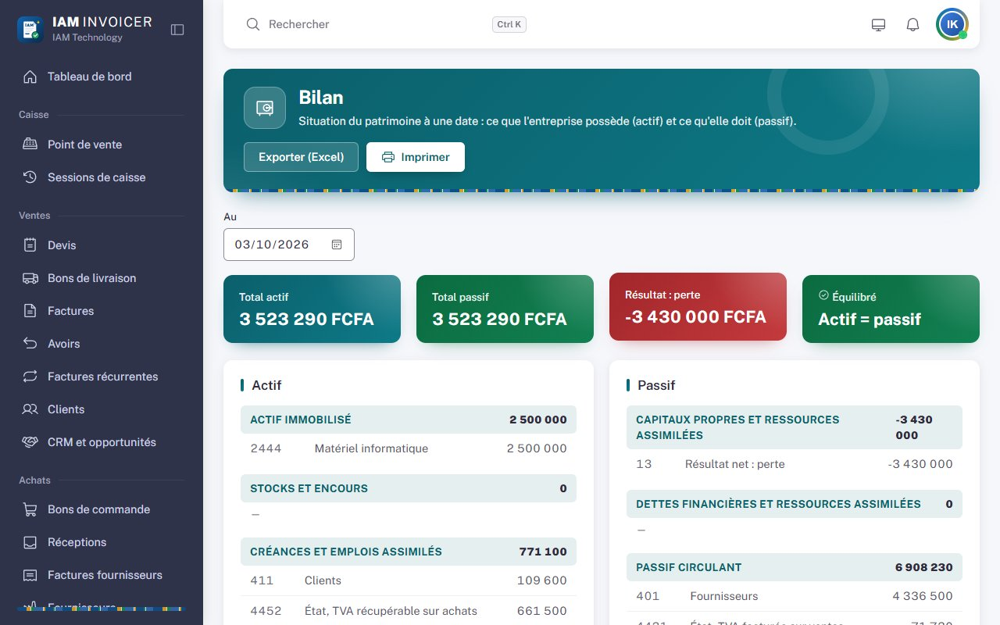
Bilan SYSCOHADA
Immobilisations et trésorerie
Immobilisations : registre des biens, plan d'amortissement, dotations annuelles, cessions. Budgets et trésorerie : budget prévu / réalisé et trésorerie prévisionnelle avec alerte de découvert.
À faire en fin d'exercice
Dotations aux amortissements, provisions, inventaire du stock et régularisations, avant d'imprimer le bilan définitif.
9. Comptable : taxes et déclarations
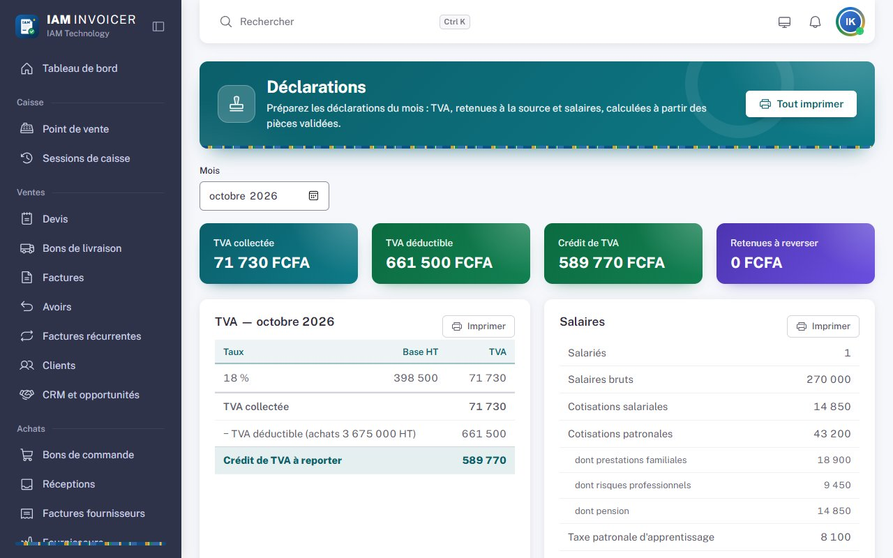
Déclarations du mois : TVA, salaires, retenues, impôt sur les bénéfices
Comptabilité → Déclarations, choisissez le mois.
TVA : collectée par taux, déductible, TVA retenue par vos clients, montant à payer ou crédit à reporter.
Retenues à la source : celles que vous devez reverser (opérées sur vos fournisseurs) et celles que vos clients ont retenues (à imputer).
Salaires : cotisations sociales détaillées, taxe patronale, impôt sur les salaires.
Impôt sur les bénéfices (BIC / IS) : estimation sur le résultat de l'année, moins les acomptes payés.
Imprimer chaque état ou Tout imprimer, puis reportez les montants sur les formulaires officiels.
États préparatoires
Ces montants sont calculés à partir de vos pièces validées. Vérifiez-les avant de déclarer, en particulier les taux propres à votre pays.
10. Ressources humaines : salariés, paie, congés
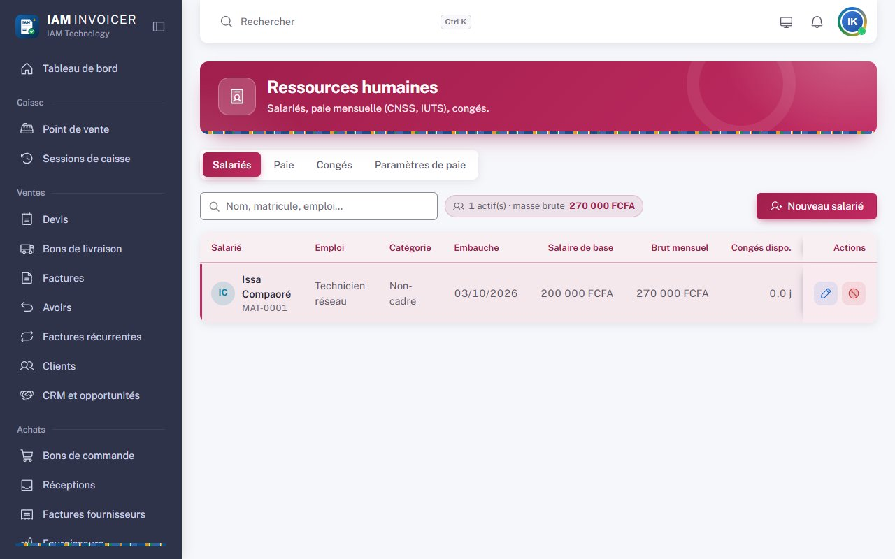
Salariés
La paie du mois
Gestion → Ressources humaines → Salariés : créez chaque salarié (salaire de base, indemnités, catégorie, charges de famille, n° CNSS). Le net s'affiche pendant la saisie.
Onglet Paie → Préparer la paie du mois.
Variables de chaque salarié : primes, heures supplémentaires, absences, avances.
Vérifiez, puis Valider la paie : bulletins définitifs et écriture comptable.
Bulletins (impression ou PDF) et Déclaration CNSS / IUTS.
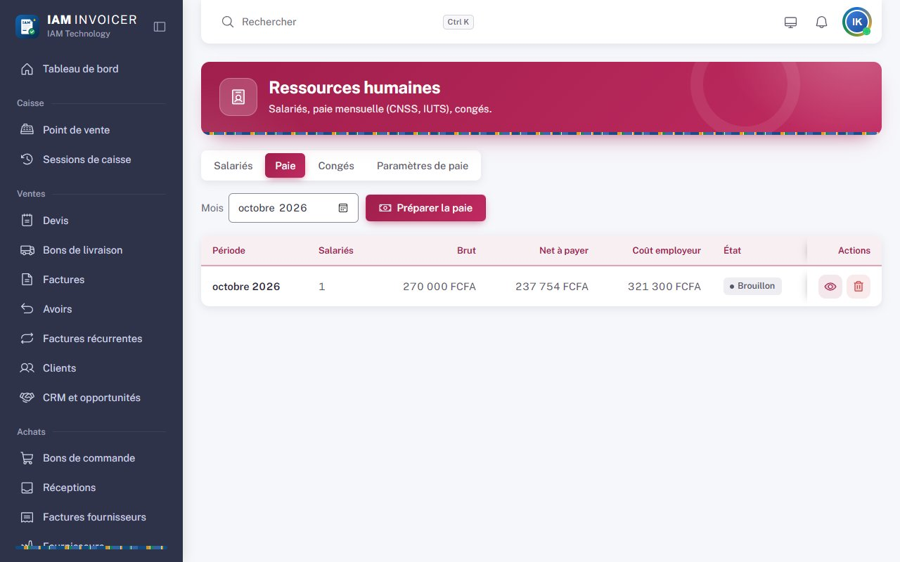
Paie du mois : brut, cotisations, impôt, net, coût employeur
Paramètres de paie
Onglet Paramètres de paie : taux CNSS salarié et patronal (prestations familiales, risques professionnels, pension), plafond, taxe patronale d'apprentissage, barème de l'IUTS, abattements, réductions pour charges de famille, et autres cotisations (assurance maladie, mutuelle, retraite…). Faites-les valider par votre comptable.
Congés
Onglet Congés : demandes, approbation ou refus, soldes calculés automatiquement.
Exercice
Créez un salarié, préparez la paie du mois avec une prime de 25 000 FCFA, validez et imprimez son bulletin.
11. Chef de projet
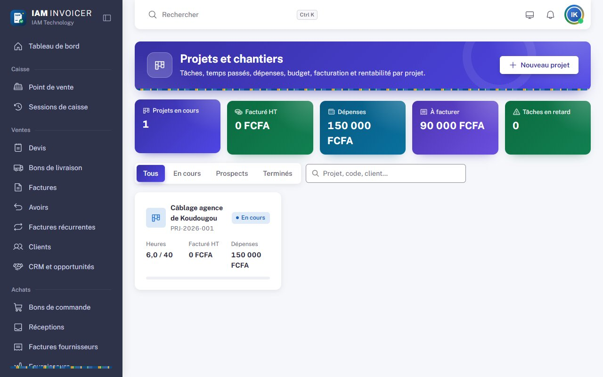
Projets : avancement, budget consommé, retards
Créer et organiser un projet
Gestion → Projets et chantiers → Nouveau projet : client, dates, taux horaire (facturation), coût horaire interne, budget en heures et en montant, budget par poste (matériel, transport, sous-traitance…).
Nouvelle tâche : intitulé, responsable, échéance, heures estimées. Cochez Jalon pour une étape clé.
Onglet Tâches : faites glisser les cartes de « À faire » à « Terminé ». Une tâche en retard est soulignée en rouge.
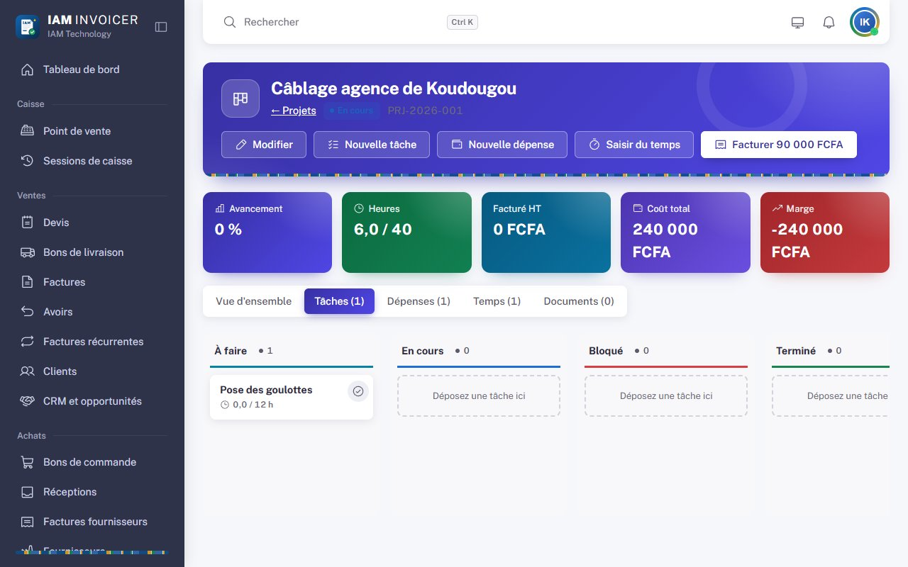
Tableau des tâches
Temps, dépenses et facturation
Saisir du temps : heures, travail effectué, tâche concernée, facturable ou non.
Nouvelle dépense : poste, fournisseur, montant, TVA, payée ou à payer, photo du justificatif. Cochez Refacturable (avec une marge) pour la facturer au client.
Facturer les heures et Refacturer les dépenses : une facture brouillon est préparée.
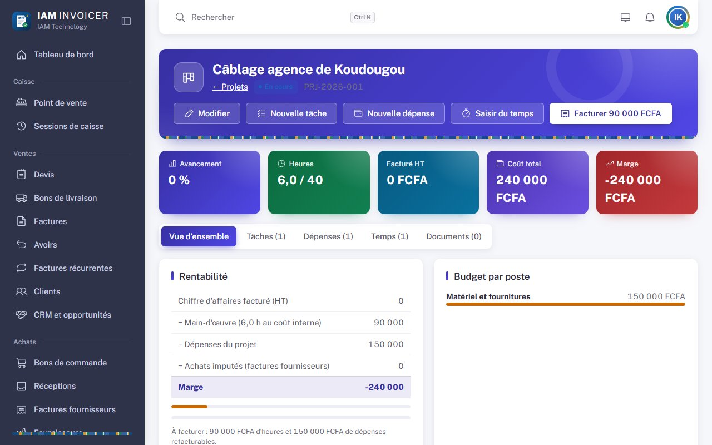
Vue d'ensemble : rentabilité, budget par poste, alertes
La vue d'ensemble calcule la marge réelle (facturé − main-d'œuvre − dépenses − achats), le budget consommé et l'avancement, et affiche les alertes : budget dépassé, poste dépassé, tâches en retard, date de fin dépassée.
12. Administrateur : société et documents
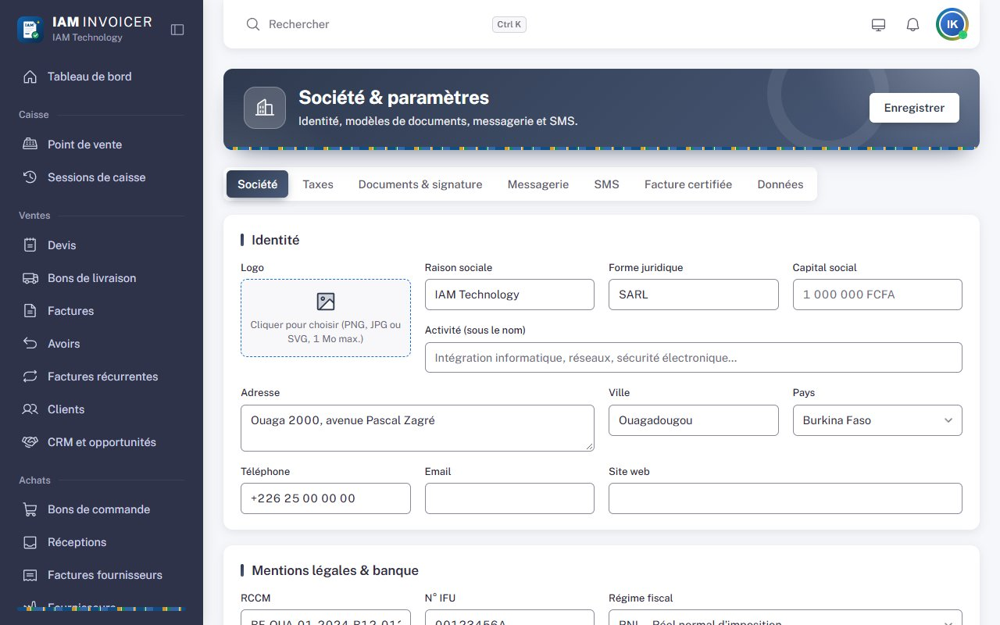
Société & paramètres
Société : logo, raison sociale, pays (il règle l'identifiant fiscal, la devise, la TVA et les régimes), mentions légales, banque, taux d'impôt sur les bénéfices.
Taxes : Ajouter les modèles du pays, puis vérifiez les taux et activez les taxes utiles (timbre, retenues, prélèvement BIC…).
Documents & signature : modèle (moderne ou classique), couleur, conditions générales, cachet et signature, marges et numérotation des lignes.
Messagerie et SMS : réglages d'envoi, avec bouton d'essai.
Facture certifiée : SECeF en simulation ou en production.
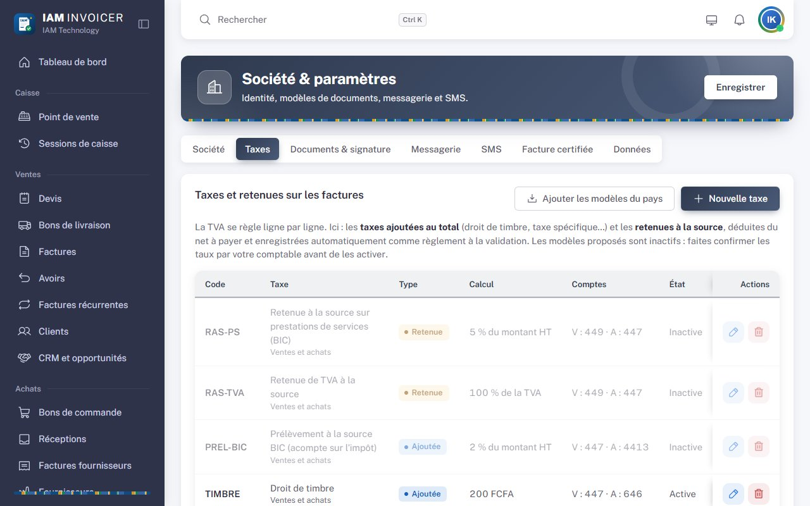
Taxes et retenues
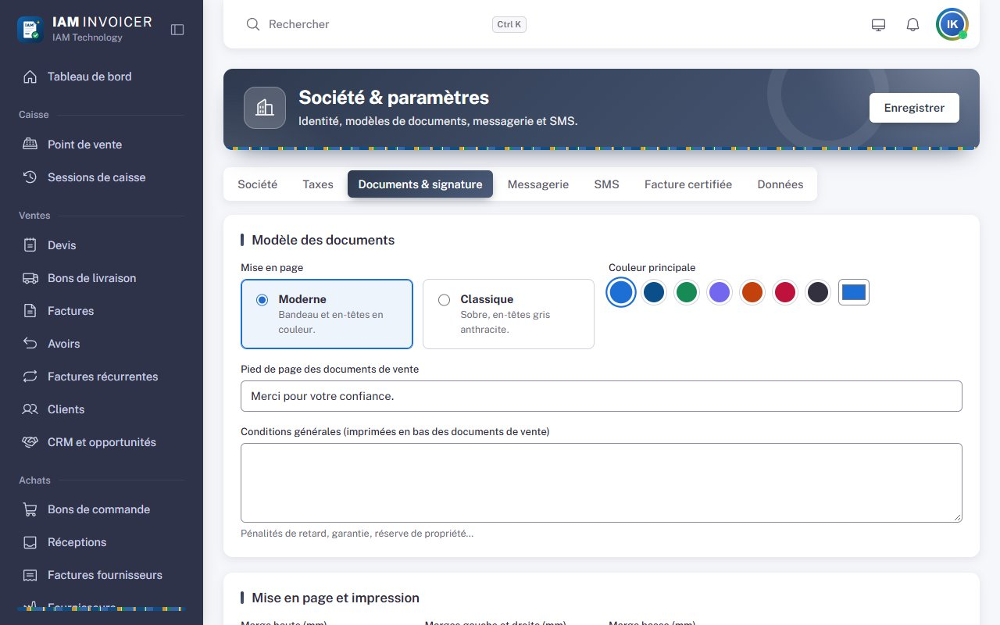
Mise en page et impression des documents
13. Administrateur : utilisateurs et droits
Utilisateurs
Administration → Utilisateurs → Nouvel utilisateur : nom, identifiant, rôle, mot de passe provisoire. Un départ se traite en désactivant le compte (ses connexions sont fermées immédiatement, l'historique reste). Le nombre d'utilisateurs actifs dépend de la licence.
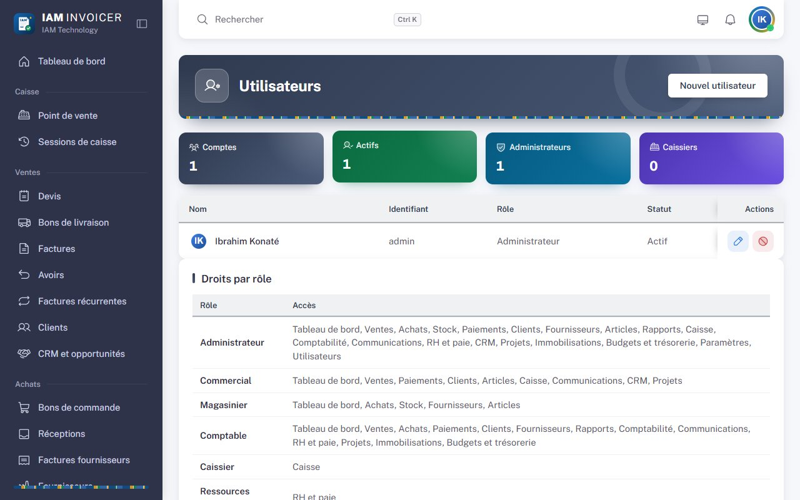
Utilisateurs et photos de profil
Rôles et droits
Administration → Rôles et droits : la matrice montre, pour chaque module, les rôles qui y ont accès et les fonctionnalités concernées. Cochez ou décochez, puis Enregistrer. Droits par défaut revient à la configuration d'origine. L'administrateur garde toujours tous les droits.
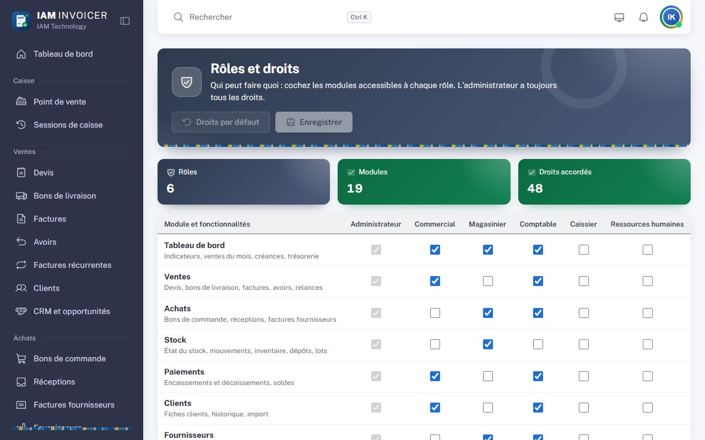
Matrice des rôles et des fonctionnalités
Journal d'activité : qui a fait quoi, et quand (créations, validations, suppressions, connexions).
14. Administrateur : import, licence, sauvegardes
Importer des données existantes
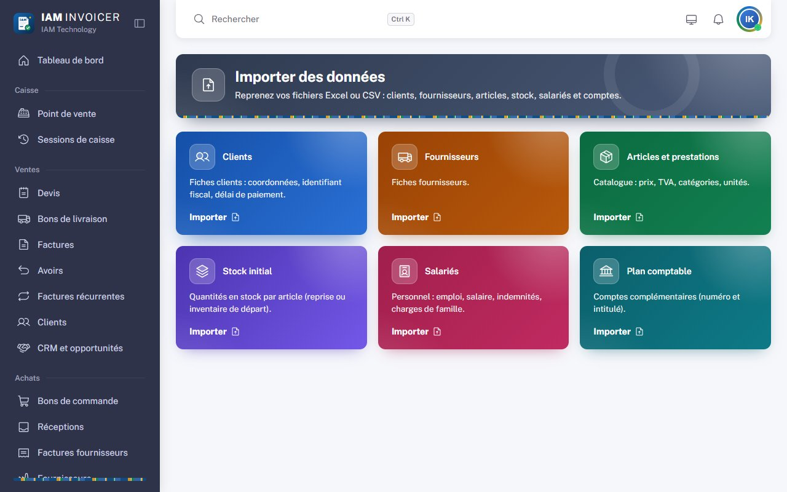
Importer des données
Administration → Importer des données, choisissez le type : clients, fournisseurs, articles, stock initial, salariés, plan comptable.
Télécharger le modèle si besoin, ou utilisez votre propre fichier Excel ou CSV.
Glissez le fichier : les colonnes sont reconnues ; corrigez la correspondance si nécessaire.
Importer, puis lisez le compte rendu : créés, mis à jour, refusés avec le motif de chaque ligne.
Ordre conseillé : plan comptable, clients et fournisseurs, articles, puis stock initial, puis salariés.
Licence
Administration → Licence : offre, modules inclus, utilisateurs, échéance. Collez la clé reçue d'IAM Technology et Activer. Pendant l'essai de 30 jours tout est ouvert ; ensuite, sans licence, le logiciel passe en lecture seule (consultation, impression et export restent possibles).
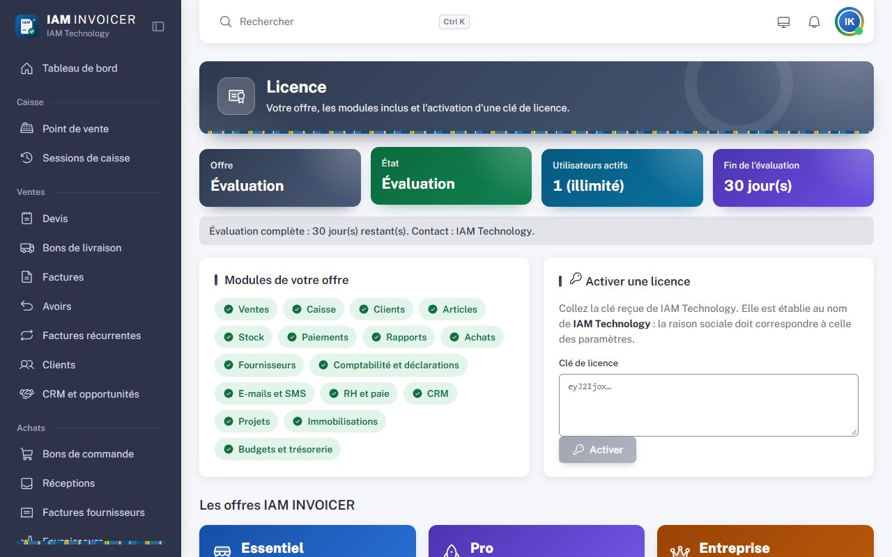
Licence et offres
Sauvegardes
Base de ce poste : Société & paramètres → Données → Sauvegardes automatiques. Une copie chaque jour dans le dossier choisi ; choisissez un dossier Google Drive, OneDrive ou Dropbox pour avoir une copie hors de l'ordinateur. Restaurer une sauvegarde… en cas de besoin.
Serveur en ligne : les sauvegardes se font sur le serveur (voir le guide d'installation).
Testez vos sauvegardes
Une fois par trimestre, restaurez une sauvegarde sur un poste d'essai pour vérifier qu'elle est complète.
15. Travailler sans Internet
Sur un ordinateur relié au serveur, sur téléphone ou dans le navigateur, une coupure ne bloque pas le travail : les dernières données restent consultables.
Ventes en caisse, règlements, fiches clients, temps passés et demandes de congé sont mis en attente ; un bandeau indique leur nombre.
Au retour du réseau, tout part automatiquement, une seule fois. Le bouton Synchroniser force l'envoi.
Sur ordinateur, on peut même démarrer et se connecter sans réseau si l'on s'est déjà connecté en ligne sur ce poste dans les 30 derniers jours.
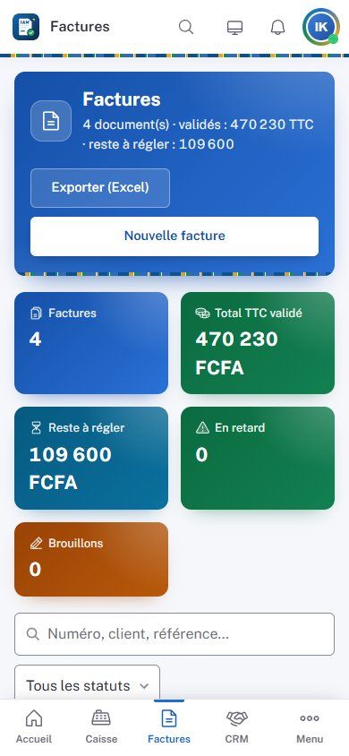
Sur téléphone : listes en cartes, menu en bas
Ne videz pas les données du navigateur
Tant que des saisies sont en attente, n'effacez pas les données du navigateur, ne désinstallez pas l'application et n'utilisez pas la navigation privée.
16. Bonnes pratiques et questions fréquentes
Les 10 réflexes
Un compte par personne ; ne prêtez jamais votre mot de passe.
Vérifiez un document avant de le valider : la validation est définitive.
Corrigez une facture validée par un avoir, jamais en la recréant.
Encaissez les règlements le jour même, avec le bon mode de paiement.
Clôturez la caisse chaque soir et expliquez tout écart.
Rattachez achats, temps et dépenses au bon projet.
Faites l'inventaire au moins une fois par an.
Contrôlez les déclarations avant de les déposer.
Vérifiez que les sauvegardes se font (date de la dernière sauvegarde).
Signalez à l'administrateur tout message d'erreur, avec une capture d'écran.
Questions fréquentes
Question
Réponse
Je ne vois pas un menu.
Il n'est pas autorisé pour votre rôle (voir l'administrateur), ou il est hors licence (cadenas).
Je me suis trompé sur une facture validée.
Faites un avoir depuis la facture, puis une nouvelle facture correcte.
Le client a payé une partie.
Encaissez le montant reçu : la facture passe en « Partielle » avec le reste à payer.
Le ticket sort mal.
Dans l'aperçu, choisissez « Ticket » ; dans le pilote de l'imprimante, papier 80 mm et marges à 0.
Un article n'apparaît pas à la caisse.
Il est peut-être désactivé, ou c'est une prestation non proposée : vérifiez dans Articles & prestations.
Une saisie hors ligne est « refusée ».
Le bandeau en donne le motif (caisse clôturée, droits…) ; corrigez puis ressaisissez.
Le logiciel est en lecture seule.
L'évaluation ou la licence est terminée : l'administrateur active une licence dans Administration → Licence.
Petit glossaire
Avoir
Document qui annule tout ou partie d'une facture.
Brouillon
Document non validé, modifiable et sans numéro définitif.
CMUP
Coût moyen unitaire pondéré : valeur moyenne d'un article en stock.
Retenue à la source
Impôt retenu par le client sur le montant payé et reversé directement à l'État.
SYSCOHADA
Système comptable des pays de l'OHADA, appliqué par IAM INVOICER.
Jalon
Étape clé d'un projet (réception, livraison…).
Besoin d'aide ?
Contactez IAM Technology avec la version du logiciel, votre rôle, la page concernée et une capture d'écran du message.